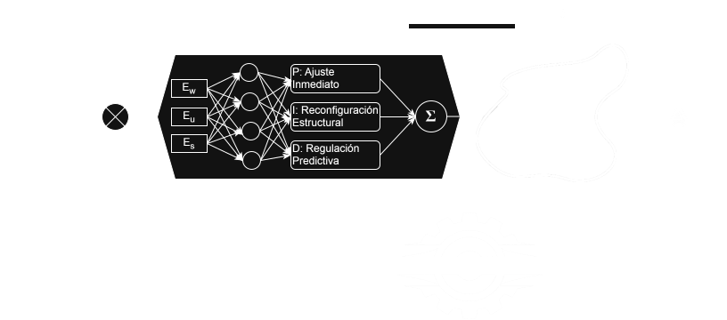

AENTROPÍA
La Doctrina Aentrópica

Fundamentación
\[ \mathbf{E}(s) = \mathbf{R}(s) - \mathbf{B}(s) \]
\[ \mathbf{C}(s) = \mathbf{K}(s) \cdot \mathbf{E}(s) \]
\[ \mathbf{Y}(s) = \mathbf{\Phi}\mathbf{R} + \mathbf{\Gamma}\mathbf{Q} - \mathbf{\Omega}\delta \]
"Existir no implica durar; durar exige ingeniería."
1. El Principio
[ Definición del Principio Aentrópico. La Segunda Ley de la Termodinámica y la anomalía del orden. ]
[ La moral como software para organizar energía. ]
2. El Modelo (Core)
Energía Interna (U)
[ Orden interno, cohesión, integridad ]
Trabajo Útil (W)
[ Orden externo, capacidad efectiva ]
Energía Intercambiada (Q)
[ Recursos, información, presión externa ]
Entropía (S)
[ Energía disipada, desorden acumulado ]
3. El Contenedor Social
Volumen (V)
[ Espacio de acción disponible ]
Libertad (L)
[ Movilidad real dentro del espacio ]
Presión (P)
[ Restricciones y normas ]
4. El Tratado (Manual Teórico)
[ La ciencia y filosofía completa detrás de la doctrina. ]